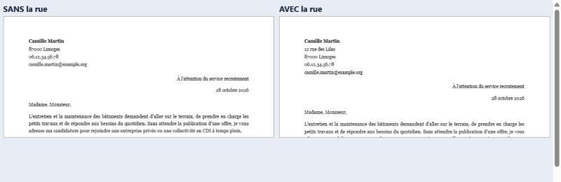
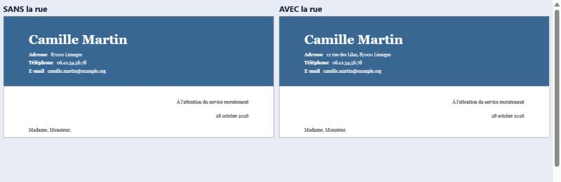

Un CV, plusieurs métiers : pouvoir ajouter sa rue sur les lettres
Rien n'est codé. Les deux lettres en images plus bas sont de vrais rendus de l'application (même fonction que la page « Mes documents »), avec et sans la rue.
Aujourd'hui la rue n'est jamais imprimée
Dans ce module, l'en-tête de chaque lettre porte le nom, le code postal et la ville, le téléphone et le courriel. La rue n'y est jamais, même si elle est écrite dans « Vos informations ». Pour une lettre envoyée par la poste, il manque donc l'adresse complète.
Dans la lettre seule, une case « Ajouter aussi ma rue (12 rue des Lilas) » existe déjà : elle n'apparaît que si la rue est renseignée, et elle est décochée au départ.
Proposé : la même case, dans la page « Mes lettres » une case pour toutes les lettres
Elle se place dans le bloc « Modèle de lettre », juste sous le choix du modèle, parce que c'est un réglage commun à toutes les lettres (comme le modèle).
Cas 1 : la rue est écrite dans « Vos informations », case décochée (état de départ) :
🎨 Modèle de lettre (le même pour toutes vos lettres)
Chaque lettre prend la couleur et la police de son CV. Vos informations sont mises en valeur dans la colonne, le bandeau ou le titre.
Sobre Vos informations en haut à gauche.
Bandeau Un bandeau de la couleur de votre CV.
Titre Grand titre, informations à côté.
Cas 2 : la case est cochée. Les aperçus des modèles se mettent à jour, et les lettres imprimées à la page « Mes documents » portent la rue :
Cas 3 : aucune rue n'est écrite dans « Vos informations » : la case n'apparaît pas (comme dans la lettre seule). Le bloc reste exactement comme aujourd'hui.
Le résultat sur la lettre, vrai rendu de l'application (modèle Sobre, à gauche sans la rue, à droite avec) :

Même chose avec le modèle Bandeau (la ligne devient « Adresse : 12 rue des Lilas, 87000 Limoges ») :

Ce que j'ai lu dans le code avant de proposer
Simple, reprise de l'existant : toute la mécanique de la rue existe déjà et sert la lettre seule (une seule fonction, ligneRueLettreCo, utilisée par les cinq modèles et par le Word). Ce module ne la déclenche jamais, parce qu'il construit ses lettres avec un réglage qui ne contient pas « rue ». Il suffit de lui en donner un.
Simple : quatre endroits à toucher, tous dans le module : l'état de la page (une valeur oui / non), la préparation de la lettre (ucpmPreparerDossierLettre), le rendu (ucpmRendreLettre), et la case dans le bloc « Modèle de lettre » avec son câblage. Les aperçus et la page « Mes documents » reprennent le même rendu : aucun écran à recâbler.
Sans risque pour la mise en page : j'ai fait l'essai avec le vrai code. La lettre avec la rue tient toujours sur une page (le moteur choisit tout seul une mise en page plus serrée si besoin, comme pour la lettre seule). Le Word suit : même fonction.
Vie privée : rien ne change. La rue reste sur l'appareil, elle ne part jamais chez l'assistant (le module ne l'envoie déjà pas). Elle n'est imprimée que si la personne coche la case.
Une limite à connaître : la case vaut pour toutes les lettres à la fois, pas une lettre par lettre (comme le modèle). C'est plus simple et c'est ce que fait une personne qui écrit à plusieurs employeurs depuis la même adresse.
Tests : un test unitaire (la préparation de la lettre pose bien la rue quand on la demande, jamais autrement) et deux cas du parcours automatique (case absente sans rue, lettre imprimée avec la rue quand la case est cochée). Une ligne au journal des changements.
Risque : faible. Retour en arrière : un seul commit. Bloquant : aucun.
Trois questions pour vous
1. Où mettre la case ?
A. Dans le bloc « Modèle de lettre », sous le choix du modèle (Recommandé). Bénéfice : un seul endroit, avec le modèle, et on voit tout de suite l'effet dans les aperçus. Risque : aucun, on ne la voit que sur la page des lettres.
B. Sur la page « Mes documents », avant le téléchargement. Bénéfice : au dernier moment, là où on envoie. Risque : les aperçus de la page des lettres ne la montrent pas, et on peut la manquer.
C. Une case pour chaque lettre. Bénéfice : un choix différent selon l'employeur (une lettre postale, les autres par courriel). Risque : plus de cases, plus de confusion pour un public qui n'est pas à l'aise ; ce besoin est rare.
2. Case cochée ou décochée au départ ?
A. Décochée (Recommandé). Bénéfice : même comportement que la lettre seule, discret par défaut (beaucoup de candidatures se font en ligne, sans besoin de la rue). Risque : une personne qui envoie par la poste doit penser à cocher.
B. Cochée si une rue est écrite. Bénéfice : rien à penser pour l'envoi postal. Risque : la rue de la personne est imprimée sans qu'elle l'ait décidé, ce qui n'est pas anodin pour sa vie privée.
3. Sans rue renseignée, que montre-t-on ?
A. Rien (Recommandé). Bénéfice : comme la lettre seule, aucun bruit. Risque : la personne ne sait pas que l'option existe.
B. Une phrase « Ajoutez votre rue dans Vos informations pour pouvoir l'imprimer ». Bénéfice : l'option se découvre. Risque : ça renvoie vers un autre écran, en plein milieu des lettres, pour une option dont beaucoup de personnes n'ont pas besoin.
Ma recommandation : 1-A, 2-A, 3-A. Pour valider, un mot suffit : « rue des lettres : A, A, A ». Si vous préférez une autre option, dites laquelle avant que je code.